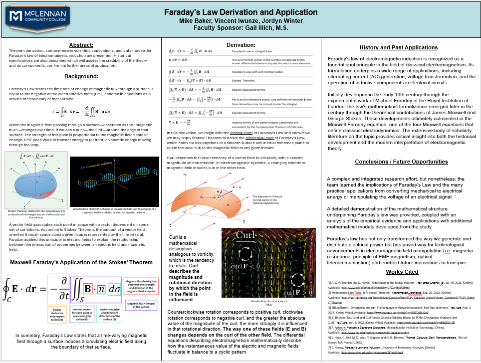

Welcome to a showcase of curiosity and discovery. This page highlights formal research experience across various disciplines, demonstrating a commitment to analytical thinking, structured investigation, and meaningful insights. From experimental studies to data-driven analyses, each project reflects a dedication to advancing knowledge and solving complex problems.
This section highlights my team's work on mitigating the challenges of lunar regolith—fine, electrostatically charged dust that threatens astronaut equipment and operations on the Moon. As part of NASA’s Artemis initiative, team Pleiades designed a repulsion device using electrostatic and mechanical techniques to prevent dust buildup on critical surfaces.
Ranked as a finalist in the NASA MINDS program, our project explored modeling and prototype testing to develop a viable solution for future lunar missions. This research represents a fusion of engineering ingenuity and practical application, contributing to NASA’s long-term vision for sustainable space exploration.
Outlined are the objectives of Team Pleiades and our research involving the creation of an EMF to repel lunar regolith.
I managed the programming aspects as well as a bit of circuitry involved in the design.
I detailed the personal responsibilities I held for the design and what actions needed to take place for our research to be successful.
This section showcases our team's Calculus II derivation of the Faraday-Maxwell equation, linking vector calculus concepts to electromagnetic principles. We explored Stokes’ theorem, real-world applications in wave propagation and wireless power transfer, and the equation’s role in modern technology.